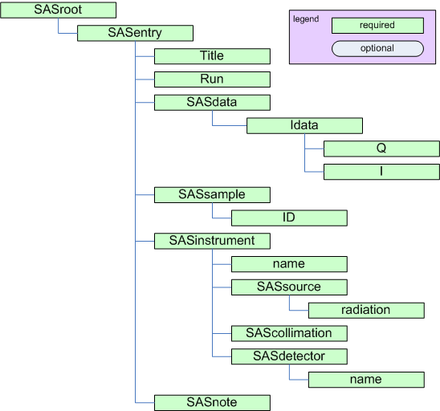

Table Of Contents
- Overview
Previous topic
Next topic
Elements of the canSAS XML standard
Elements of the canSAS XML standard
One of the first aims of the canSAS (Collective Action for Nomadic Small-Angle Scatterers) forum of users, software developers, and facility staff was to discuss better sharing of SAS data analysis software. The canSAS forum (http://www.cansas.org/canSAS) identified that a significant need within the SAS community can be satisfied by a robust, self-describing, text-based, standard format to communicate reduced one-dimensional small-angle scattering data, \(I(Q)\), between users of our facilities. Our goal has been to define such a format that leaves the data file instantly human-readable, editable in the simplest of editors, and importable by simple text import filters in programs that need not recognise advanced structure in the file nor require advanced programming interfaces. The file should contain both the primary data of \(I(Q)\) and also any other descriptive information (metadata) about the sample, measurement, instrument, processing, or analysis steps.
The cansas1d:1.1 standard meets the objectives for a 1D standard, incorporating metadata about the measurement, parameters and results of processing or analysis steps. Even multiple measurements (related or unrelated) may be included within a single XML file.
The canSAS 1-D standard for reduced 1-D SAS data is implemented using XML files. A single file can contain SAS data from a single experiment or multiple experiments. All types of relevant data (\(I(Q)\), metadata) are described for each experiment. More details are provided below.
The basic elements of the cansas1d:1.1 standard are shown in the following table. After an XML header, the root element of the file is SASroot which contains one or more SASentry elements, each of which describes a single experiment (data set, time-slice, step in a series, new sample, etc.). Details of the SASentry element are also shown in the next figure. See the section Elements of the canSAS XML standard for examples of cansas1d:1.1 XML data files. Examples, Case Studies, and other background information are below. More discussion can be found on the canSAS 1D Data Formats Working Group page (http://www.cansas.org/wgwiki/index.php/1D_Data_Formats_Working_Group) and its discussion page. (http://www.cansas.org/wgwiki/index.php/Talk:1D_Data_Formats_Working_Group)
block diagram of minimum elements required for cansas1d:1.1 standard
Required header for cansas1d:1.1 XML files
1 2 3 4 5 6 7 | <?xml version="1.0"?>
<SASroot version="1.1"
xmlns="cansas1d:1.1"
xmlns:xsi="http://www.w3.org/2001/XMLSchema-instance"
xsi:schemaLocation="cansas1d:1.1
http://www.cansas.org/svn/1dwg/trunk/cansas1d.xsd"
>
|
Basic elements of the canSAS 1-D standard
| Element | Description |
|---|---|
| XML Header | descriptive info required at the start of every XML file |
| SASroot | root element of XML file |
| SASentry | data set, time-slice, step in a series, new sample, etc. |
| Title | for this particular SASentry |
| Run | run number or ID number of experiment |
| {any} | any XML element can be used at this point |
| SASdata | this is where the reduced 1-D SAS data is stored |
| Idata | a single data point of \(I(Q)\) (and related items) in the dataset |
| SAStransmission_spectrum | any transmission spectra may be stored here |
| Tdata element | a single data point in the transmission spectrum |
| {any} | any XML element can be used at this point |
| SASsample | description of the sample |
| SASinstrument | description of the instrument |
| SASsource | description of the source |
| SAScollimation | description of the collimation |
| SASdetector | description of the detector |
| SASprocess | description of each processing or analysis step |
| SASnote | anything at all |
successfully validate against the established XML Schema.
where \(\lambda\) is the wavelength of the radiation, and \(2\theta\) is the angle through which the detected radiation has been scattered.

definition of Q geometry for small-angle scattering
with the following exceptions:
use this |
to mean this |
|---|---|
um |
micrometres |
C |
Celsius |
A |
Angstrom |
percent |
% |
fraction |
fraction |
a.u. |
arbitrary units |
none |
no units are relevant (such as dimensionless) |
such as 1/A
use ^ to indicate an exponent (rather than **), such as m^2
(and not A3 or A**3 or m-4)
(See the sections titled Definition of the coordinate axes and Compatibility of Geometry Definitions.)
multiple axes require more information):
Binary data is not supported
The definitions of the coordinate axes for translation and orientation geometry are described by the following two figures.
Coordinate axes as viewed from the source.
Coordinate axes as viewed from the detector.
The canSAS/xmlWriter (http://www.cansas.org/formats/tools/xmlWriter/) is a WWW form to translate three-column ASCII text data into the cansas1d:1.1 XML format. This form will help you in creating an XML file with all the required elements in the correct places. The form requests the SAS data of Q, I, and Idev (defined elsewhere on this page) and some basic metadata (title, run, sample info, ...).
Press the Submit button and you will receive a nicely formatted WWW page with the SAS data. If you then choose View page source (from one of your browser menus), you will see the raw XML of the cansas1d:1.1 XML format and you can copy/paste this into an XML file.
The SAS data that you paste into the form box is likely to be copied directly from a 3-column ASCII file from a text editor. Line breaks are OK, they will be treated as white-space as will tabs and commas. Do not be concerned that the data looks awful in the form entry box, just check the result to see that it comes out OK.
The cansas1d.xsd XML Schema (http://www.cansas.org/trac/browser/1dwg/trunk/cansas1d.xsd) defines the rules for the XML file format and is used to validate any XML file for adherence to the format.
TRAC: (view source code highlighted by bug tracking system)
SVN: (view raw source code from version control system)
An XML stylesheet, or XSLT (http://www.w3schools.com/xsl/), can be used to extract metadata or to convert into another file format. The default canSAS stylesheet cansasxml-html.xsl (http://www.cansas.org/svn/1dwg/trunk/cansasxml-html.xsl) should be copied into each folder with canSAS XML data file(s). It can be used to display the data in a supporting WWW browser (such as Firefox or Internet Explorer) or to import into Microsoft Excel (with the added XML support in Excel).
By default, MS Windows binds .xml files to start Internet Explorer. Double-clicking on a canSAS XML data file with the cansasxml-html.xsl (see above tip) stylesheet in the same directory will produce a WWW page with the SAS data and selected metadata.
Some common best practices have been identified in the list below.
be sure to update to the latest SVN repository revision:
svn update
check the output directory to see if it contains the default XSLT file
for the $ Revision: $ string, such as in the next example.
# $Revision: 313 $
| Basic example: | Note that, for clarity, only one row of data is shown. This is probably a very good example to use as a starting point for creating XML files with a text editor. |
|---|
| Bimodal test data: | |
|---|---|
Simulated SAS data (with added noise) calculated from model bimodal size distribution to test size distribution analysis routines. |
|
| Glassy Carbon Round Robin: | |
|---|---|
Samples of a commercial glassy carbon measured at several facilities worldwide. |
|
| dry chick collagen SAXS: | |
|---|---|
see Case Study: Dry Chick Collagen section SAXS data from dry chick collagen illustrates the minimum information necessary to meet the requirements of the standard format. |
|
| AF1410 steel SANS: | |
|---|---|
see Case Study: AF1410 Steel section SANS data from AF1410 steel using magnetic contrast variation (with multiple samples and multiple data sets for each sample), the files can be viewed from the TRAC site (no description yet). http://www.cansas.org/trac/browser/1dwg/trunk/examples/af1410/ |
|
The cansas1d-template.xml data file is used to test all the rules in the XML Schema. This is probably not a very good example to use as a starting point for creating XML files with a text editor since it tests many of the special-case rules.
Each experiment is described with a single SASentry element. The fragment below shows how multiple experiments with multiple data sets can be included in a single XML file. This illustrates using more than one SASentry and more than one SASdata element.
1 2 3 4 5 6 7 8 9 10 11 12 13 14 15 16 17 18 19 20 21 22 23 24 25 26 27 28 29 30 31 32 33 34 | <?xml version="1.0"?>
<?xml-stylesheet type="text/xsl" href="cansasxml-html.xsl" ?>
<SASroot version="1.1"
xmlns="urn:cansas1d:1.1"
xmlns:xsi="http://www.w3.org/2001/XMLSchema-instance"
xsi:schemaLocation="urn:cansas1d:1.1
http://www.cansas.org/formats/1.1/cansas1d.xsd"
>
<!--
Note:
This file is not a valid cansas1d/1.1 data file.
It is an example to show how to structure multiple data sets.
-->
<SASentry name="071121.dat#S22">
<!-- contents of the first experiment in the file go here -->
</SASentry>
<SASentry name="example temperature series">
<!-- example with two SAS data sets related to the same sample -->
<Title>title of this series</Title>
<Run name="run1">42-001</Run>
<Run name="run2">42-002</Run>
<SASdata name="run1">
<!-- data from 42-001 run comes here -->
</SASdata>
<SASdata name="run2">
<!-- data from 42-002 run comes here -->
</SASdata>
<!-- other elements come here for this entry -->
</SASentry>
<SASentry name="other sample">
<!-- any number of additional experiments can be included, as desired -->
<!-- SASentry elements in the same XML file do not have to be related -->
</SASentry>
</SASroot>
|
Full examples of canSAS XML files with multiple experiments include:
| multiple data sets: | |
|---|---|
ISIS LOQ SANS instrument: |
|
| multiple samples, multiple data sets: | |
|---|---|
SANS study using magnetic contrast variation (with multiple samples and multiple data sets for each sample), the files can be viewed from the TRAC site (no description yet). |
|
To allow for inclusion of elements that are not defined by the cansas1d.xsd XML Schema, XML foreign elements are permitted at select locations in the cansas1d:1.1 format. Please refer to the XML Help section for more help with XML foreign elements.
Note
Need to make another example. This example was based on v1.0. With v1.1, there is no need for the foreign namespace in this example.
There is an example that demonstrates the use of a foreign namespace: http://www.cansas.org/trac/browser/1dwg/data/Glassy%20Carbon/ISIS/GLASSYC_C4G8G9_withTL.xml
This example uses a foreign namespace to record the transmission spectrum related to the acquisition of the SANS data at a time-of-flight facility. Look near line 153 for this element:
<transmission_spectrum xmlns="urn:transmission:spectrum">
The foreign namespace given (urn:transmission:spectrum) becomes the default namespace for just the transmission_spectrum element.*
Also refer to canSAS TRAC ticket #47 (http://www.cansas.org/trac/changeset/47) for an example of arranging the content in SASprocessnote to avoid the use of foreign namespace elements.
Support for importing cansas1d:1.1 files exists for these languages and environments:
| FORTRAN: | See the FORTRAN section. |
|---|
| IgorPro: | See the IgorPro section. |
|---|
| Java JAXB: | See the Java JAXB section. |
|---|
| Microsoft Excel: | |
|---|---|
| Support for Microsoft Excel is provided through the default canSAS stylesheet, cansasxml-html.xsl (http://www.cansas.org/svn/1dwg/trunk/cansasxml-html.xsl). The ISIS LOQ instrument (http://www.isis.stfc.ac.uk/instruments/loq/loq2470.html) has provided an excellent description of how to import data from the cansas1d:1.1 format into Excel. Also note that the old WWW site (http://www.isis.rl.ac.uk/archive/LargeScale/LOQ/loq.htm) may still be available. | |
| PHP: | See the PHP section. The canSAS/xmlWriter (http://www.cansas.org/xmlWriter/) is implemented in PHP (http://www.php.net) and writes a cansas1d:1.1 data file given three-column ASCII data as input. The code uses DomDocument (http://www.php.net/DomDocument) to build the XML file. Look for the line beginning with: function prepare_cansasxml($post)
Another example of DomDocument is in the function surveillance($post) where logging information is inserted into an XML file. PHP source: http://www.cansas.org/trac/browser/1dwg/trunk/php/xmlWriter/index.php |
|---|
| Python: | See the Python section. |
|---|
| XSLT: | XSLT (useful in a web browser) is described later in the Example XML Stylesheets section. |
|---|
| TRAC: | (bug reporting) http://www.cansas.org/trac/browser/1dwg/tags/v1.1 |
|---|
| SVN: | (subversion revision control system) http://www.cansas.org/svn/1dwg/tags/v1.1 |
|---|